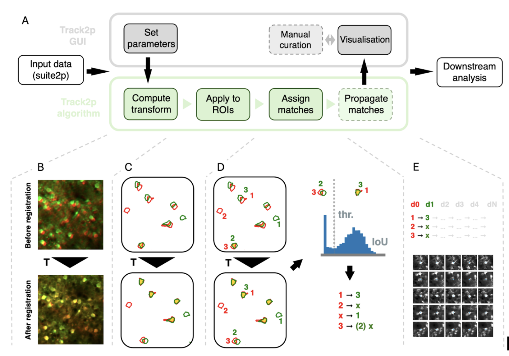

Algorithm overview#

In order to track cells across days while taking into account the specific constraints of development, we devised a simple tracking approach based on spatial similarity of detected cells across consecutive recordings. As in other tracking algorithms for calcium imaging data, the final goal is to find a linking between cells across days allowing the user to compare their functional properties.
To achieve this goal the algorithm takes as input a number of preprocessed calcium recording sessions, each consisting of a set of ROIs and their associated traces, as well as an associated image of the FOV that is used to align the recordings. Given the input data, the algorithm proceeds sequentially, taking each two consecutive sessions (s and s+1) and performing the tracking as follows:
Firstly, the transform between the two sessions is estimated using affine image registration (fig. 1B, transform denotes with T). We use an affine transform as an approximation of the transformation between two consecutive days, accounting for rigid transformations such as rotations and translations (mostly due to slight inaccuracies in experimental FOV alignment) as well as scaling and shearing (mostly due to brain growth). The transform is estimated by registering the mean FOV of s+1 (moving image, green in fig. 1B) to the mean FOV of s (reference image, red in fig. 1B).
In the next step, the computed transformation is applied to the ROIs from session s+1 (green in fig. 1C) to align them to ROIs from session s (red in fig. 1C). If the transform is estimated well, the aligned ROIs show a large degree of overlap for cells that are detected in both sessions (overlap shown in yellow in fig. 1C, notice the change between the ROIs before and after the transform).
Once ROIs from the two sessions are aligned, the algorithm proceeds with matching (fig. 1D). To perform the matching, a spatial similarity metric (intersection over union - IoU) is computed between each ROI from session s and each transformed ROI from session s+1. We then assign the matches in a globally optimal way that maximises the sum of IoU values across all matches using a linear sum assignment algorithm.
Since the two sessions contain a different number and identity of detected cells (for example red ROI index 2 in fig. 1D) and since ROIs can overlap even if the signal does not come from the same cells (for example red ROI index 3 with green ROI index 2) we perform an additional filtering step on the assigned matches. Assuming that the IoU values for putative true and putative false matches come from different distributions, we would expect a bimodal histogram of IoU values across all assigned matches (see histogram in fig. 1D). To reject the putative false positives we compute a threshold based on automatic thresholding methods. This ensures that assigned matches with low spatial similarity are rejected (such as red ROI index 3 to green ROI index 2 in fig 1D) while the matches with high similarity are accepted (such as red ROI index 1 to green ROI index 3 in fig 1D). This then yields the final matching for the pair of sessions s to s+1.
In the case of more than two sessions the procedure is iteratively repeated by matching s+1 to s+2 and continuing until all recordings are matched. The matches are then propagated from s_0 until the last session in order to give the final matching of cells across days, with the track being terminated in case a match is not found on a subsequent day.